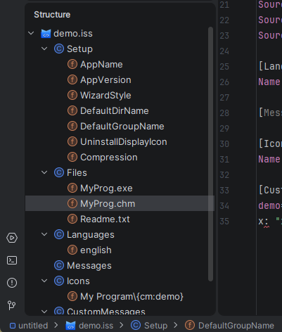

構造ビュー
このプラグインは .iss スクリプトファイルに完全に統合された構造ビューを提供します。構造ツールウィンドウ（Alt+7
）またはナビゲート → ファイル構造ポップアップ（Ctrl+F12）からアクセスできます。

ツリーレイアウト
構造ツリーはスクリプトの論理的な構成を反映します：
- ルートノードは
.issファイル自体を表します（スクリプトファイルアイコンで表示）。 - セクションノード（例：
[Setup]、[Files]、[Languages]）はルートの直接の子で、それぞれセクションアイコンで表示されます。 - エントリーノードはセクションの子で、セクションタイプに応じて個々のディレクティブ、パラメーターエントリー、またはメッセージキーを表します。
ナビゲーション
構造ビューで任意のノードをクリックすると、エディターのカーソルが対応する行に直接移動します。これにより、大きなスクリプト内の離れたセクション間をスクロールせずに簡単にジャンプできます。
エディターでカーソルが移動すると、構造ビューは自動スクロールして現在位置を含むエントリーをハイライト表示し、ツリーとエディターを常に同期させます。
エントリーアイコン
各エントリーにはその種類を示すアイコンが付いています：
| アイコン | 意味 |
|---|---|
f |
フィールドのようなエントリー — 値を持つディレクティブキーまたはパラメーターキー |
C |
セクションコンテナーノード |
ルートノードのファイルタイプアイコンは IDE 全体で使用される .iss ファイルアイコンと一致します。
パンくずバー
エディター下部のステータスバーには現在のカーソル位置への構造パス（例：demo.iss › [Setup] › DefaultGroupName
）が表示され、構造ツールウィンドウを開かずに常に位置を把握できます。